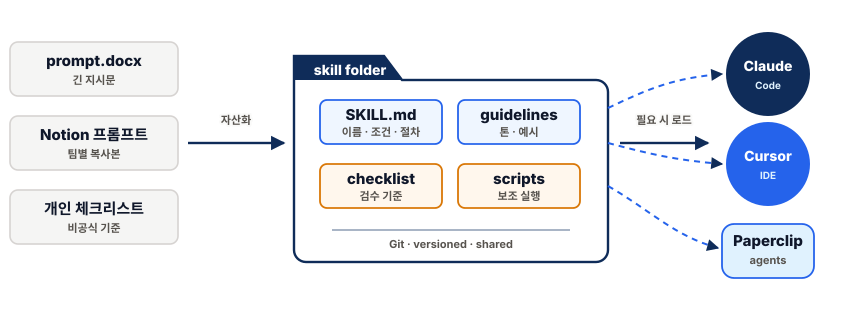
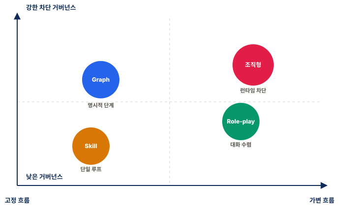
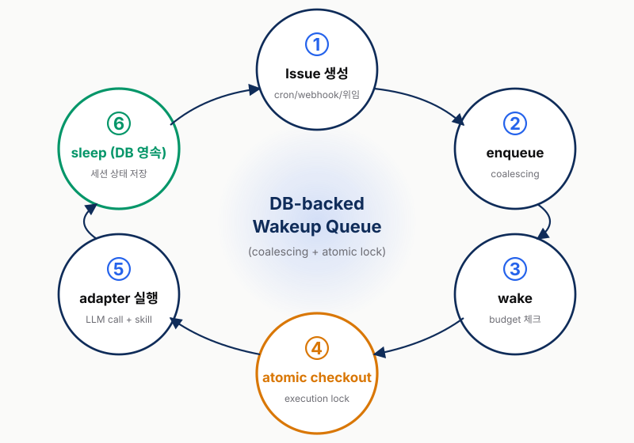

커넥트브릭 격주 세미나
ConnectBrick Seminar
ConnectBrick Seminar
AI 에이전트
오케스트레이션
능력 경쟁 이후, 코디네이션을 어떻게 설계할 것인가
오늘의 범위
30분씩 세 덩어리로 봅니다. 동향을 보고, 판단 프레임을 만들고, 조직형 사례로 확인합니다.
1
주간 동향 요약
30분 · 왜 지금 멀티에이전트와 운영 규칙이 중요해졌는가
→
2
오케스트레이션 유형
30분 · 그래프 · 역할/핸드오프 · 조직형 구조 비교
→
3
Paperclip 사례
30분 · 조직형 운영 제어 계층이 실제 시스템에서 보이는 방식
동향 → 프레임 → 사례 — 오늘 시간이 끝나면 "우리 업무는 어디서 멈춰야 하는가" 라는 질문을 들고 2회차로 넘어갑니다.
Section
위클리 다이제스트
에이전트 생태계 2026년 5월
01
능력 경쟁은 끝났고, 코디네이션이 새 병목이다
2026년의 변화는 "더 똑똑한 모델"보다 "여러 에이전트를 제품처럼 운영하는 능력"으로 옮겨가고 있습니다.
57%
상용 운영 진입
LangChain 설문 n=1,340
+1,445%
multi-agent 문의
Gartner 2024 Q1 → 2025 Q2
9,400+
MCP 서버
18개월 만의 사실상 표준화
10+
협업 에이전트
2026년 보편화 전망
운영 설계가 차이를 만든다 — 모델 IQ보다 여러 호출·도구·사람 승인을 조정하는 능력이 새 병목입니다.
모델 위에 운영 계층이 쌓인다
모델은 가장 아래층이고, 제품 품질은 실행 하네스·프로토콜·오케스트레이션·운영 규칙이 함께 맞물릴 때 결정됩니다.

층의 조합이 품질 — 단일 모델 호출이 아니라 실행 하네스·프로토콜·오케스트레이션·운영 규칙의 조합이 제품 품질을 결정합니다.
5 메타 트렌드
모델 위에 쌓이는 운영 계층은 다섯 갈래로 정리됩니다 — 실행 하네스 · MCP · A2A · 스킬 · 운영 규칙.
1
실행 하네스
코딩 도구가 파일·셸·메모리·샌드박스를 가진 업무 실행 환경으로 확장
2
MCP
도구와 데이터 연결이 API 목록이 아니라 공통 인터페이스가 됨
3
A2A
도구 연결 다음 병목은 전문 에이전트 간 발견과 호출 계약
4
스킬
프롬프트가 버전 관리 가능한 절차와 보조 파일 패키지로 이동
5
운영 규칙
평가·관찰성·비용 통제가 상용 운영의 기본 안전장치가 됨
다섯 갈래가 동시에 굳는 해 — 어느 하나만 도입하기 어렵고, 도입 시 다섯 축의 상호 의존을 함께 봐야 합니다.
실행 하네스 — 코딩 도구에서 업무 런타임으로
2026년의 에이전트 하네스는 답변창이 아니라, 파일·셸·메모리·샌드박스를 가진 장기 실행 작업공간으로 확장되고 있습니다.

업무 실행 환경의 표준화 — Excel · PDF · PPT · 광고 리포트처럼 파일 기반 업무도 같은 하네스 위에서 처리되는 쪽으로 이동합니다.
MCP — 도구 연결의 표준 포트
MCP 서버 9,400개 — 호스트와 데이터 소스 사이의 공통 인터페이스가 18개월 만에 사실상 표준이 됐습니다.

한 번 연결하면 여러 에이전트가 쓴다 — Shopify · Meta Ads · GA4 · Slack 같은 외부 시스템은 MCP 서버 또는 게이트웨이로 공통화됩니다.
MCP 다음은 A2A다
MCP가 도구와 데이터 접근을 표준화했다면, 다음 병목은 전문 에이전트끼리 서로를 발견하고 호출하는 계약입니다.

프로토콜은 계층화된다 — 도구/데이터는 MCP, 전문 에이전트 호출은 A2A, 결제·UI·실시간 이벤트는 별도 계층으로 나뉩니다.
스킬 — 프롬프트 자산이 절차가 된다
흩어진 프롬프트 모음은 SKILL.md · 체크리스트 · 금지 규칙 · 보조 스크립트를 가진 호출 가능한 업무 패키지로 바뀝니다.

좋은 프롬프트 모음이 아니다 — 반복 기준을 버전 관리하고, 필요한 순간에만 불러와 여러 에이전트가 같은 기준으로 적용합니다.
상용 운영의 질문은 "잘 쓰나"가 아니다
운영 단계에서는 결과가 좋아 보이는지보다, 실패를 추적하고 재현하며 비용과 품질을 제어할 수 있는지가 먼저입니다.

운영 = 통제 가능성 — 품질·추적성·비용·승인 기준이 모델 선택만큼 중요해집니다.
다단계 워크플로는 작은 오류도 복리로 커진다
단계별 성공률이 90~95%로 높아 보여도, 5~10단계가 직렬로 이어지면 최종 성공률은 60% 안팎까지 떨어집니다.

HITL과 단계별 평가가 필요 — 외부 발행·고객 접점·비용 집행처럼 5~10단계가 직렬로 도는 업무에는 중간 게이트가 필수입니다.
Section
오케스트레이션 유형
프레임워크 선택은 “라이브러리”가 아니라 “일을 어떻게 나누고 멈출지”를 고르는 문제
02
어디서 멈출 수 있어야 하는가
1부의 다섯 트렌드는 결국 같은 질문으로 모입니다 — 고정 흐름인가, 가변 흐름인가, 거버넌스는 얼마나 강하게 차단해야 하는가.

선택 기준은 멈춤 방식 — 단계가 고정되면 그래프형, 관점 전환이 중요하면 역할형, 승인·예산 차단이 중요하면 조직형이 출발점입니다.
에이전트 오케스트레이션의 유형
프레임워크 이름보다 먼저 봐야 할 것은 작업의 기본 단위가 단계, 담당자 전환, 이슈 중 어디에 가까운지입니다.
| 유형 |
대표 |
핵심 질문 |
핵심 단위 |
거버넌스 |
| 그래프형 |
LangGraph |
다음 단계는 무엇인가 |
노드 / 엣지 |
엣지에 HITL |
| 역할/핸드오프형 |
CrewAI / AutoGen / handoffs |
누가 이어받는가 |
발언 / 인계 |
비평가 또는 외부 래퍼 |
| 조직형 |
Paperclip |
누가 책임지고 어디서 멈추는가 |
이슈 / 작업 |
실행 중 강제 |
세 유형 + 두 보조 패턴 — 감독자/라우터는 다음 작업자를 고르는 제어 패턴, 스킬은 반복 기준을 공유하는 능력 자산 계층입니다.
그래프형 — 결정적 분기와 승인 게이트
순서와 승인 지점이 고정된 파이프라인은 그래프로 그릴 때 추적성과 재개성이 가장 좋습니다.

잘 맞는 일 — 리서치 → 초안 → 검수 → 발행처럼 순서와 승인 지점이 고정된 파이프라인.
역할/핸드오프형 — 발산과 다관점 검토
발산과 비판이 품질을 좌우하는 작업은 고정 플로우보다 역할 간 대화 구조가 자연스럽습니다.

발언과 인계가 품질을 좌우 — "누가 무엇을 말하고 누구에게 넘기는가"가 핵심이지만, 승인·예산 규칙은 별도 장치가 필요합니다.
조직형 — 승인과 예산이 실행 규칙이 된다
프로젝트·승인·예산·위임이 함께 있으면 "어떻게 일하나"보다 "어디서 멈추나"가 먼저 설계 대상이 됩니다.

어디서 멈추나 — 조직형은 "어떻게 일하나"보다 멈춤 조건을 시스템의 기본 규칙으로 둡니다.
감독자/라우터 — 다음 작업자를 고르는 장치
감독자·라우터는 네 번째 오케스트레이션 유형이 아니라, 그래프형·역할형·조직형 안에 들어가는 제어 패턴입니다.
그래프형 안
분기 노드가 입력을 보고 다음 노드나 작업자를 고릅니다.
역할형 안
관리자 에이전트가 다음 발언자나 담당자를 고릅니다.
조직형 안
상위 직책 에이전트가 하위 이슈를 만들고 담당자를 배정합니다.
판단 질문 — 이것이 별도 패러다임인가가 아니라, 중앙 조정자가 얼마나 강하게 제어권을 가져야 하는가입니다.
횡단 계층 — 스킬
스킬은 흐름을 표현하는 방식이 아니라, 반복 기준과 보조 파일을 필요한 시점에 불러오는 능력 자산 계층입니다.

흐름이 아니라 능력 — 어떤 스킬을 언제 부르고 어떤 행동을 막을지는 그래프·역할 인계·조직형 운영 구조가 정합니다.
유형 선택 기준
이 분류는 정답표가 아니라, 커넥트브릭 업무를 어떤 구조로 먼저 그릴지 정하기 위한 판단 프레임입니다.
| 조건 |
우선 검토 |
| 단계와 승인 지점이 고정됨 |
그래프형 |
| 관점 전환과 비평이 중요함 |
역할/핸드오프형 |
| 책임·승인·예산·감사 로그가 중요함 |
조직형 |
| 요청마다 담당자 선택이 달라짐 |
감독자/라우터 추가 |
| 반복 기준을 일관되게 적용해야 함 |
스킬 추가 |
뼈대 + 보조 패턴 — 하나를 고르는 것보다 기본 뼈대를 정하고 필요한 보조 패턴을 섞는 일이 더 중요합니다.
실무 보정 네 가지
현장에서는 유형 하나를 고르는 것보다, 운영자 도구·라우팅·개발자 워크스페이스·도메인 규칙을 맞춰 섞는 일이 많습니다.
시각 워크플로 도구
n8n · Make · Zapier는 반복 파이프라인을 운영자가 직접 다루는 데 유리합니다.
감독자 / 라우터
요청 종류가 다양하면 중앙 조정자가 다음 작업자와 경로를 고르는 장치가 필요합니다.
개발자 에이전트 플랫폼
Google Antigravity와 Claude Code Agent Teams/View는 여러 에이전트 세션을 실행·검증·관찰하는 작업공간에 가깝습니다.
도메인 맞춤 조합
하위 에이전트 · 인계 · 스킬 · 라우터 · 맞춤형 작업 흐름을 업무 규칙에 맞춰 조합합니다.
네 가지를 업무에 맞춰 섞는다 — 유형 선택만으로 끝나지 않고, 운영자 도구·라우팅·워크스페이스·도메인 규칙이 함께 설계 대상입니다.
실제 운영은 하이브리드다
조직형 뼈대 위에 검수는 그래프형 체크포인트, 초안은 역할/핸드오프형, 반복 기준은 스킬을 얹는 구조가 더 현실적입니다.

네 유형을 함께 — 기본 뼈대는 조직형, 작업 배분은 감독자/라우터, 작성 단계는 역할/핸드오프형, 반복 기준은 스킬로 섞을 수 있습니다.
Section
조직형 사례
Paperclip은 정답이 아니라, 조직형 패러다임을 설명하는 구체 사례입니다.
03
왜 Paperclip을 보나
한 명의 직원이 아니라, 목표·조직도·이슈·승인·예산을 가진 회사 단위를 만드는 운영 제어 계층입니다.
작업 단위
단계 · 발언 · 도구 호출보다 이슈 / 작업을 운영 단위로 둡니다.
협업 구조
대화 흐름보다 조직도 / 위임으로 책임을 나눕니다.
통제 방식
승인 · 정책 · 예산을 실행 중 규칙으로 강제합니다.
사례로서의 Paperclip — Paperclip 자체가 목적이 아니라, 조직형이 어떤 시스템 모델을 요구하는지 보기 위한 구체 사례입니다.
회사 단위 → 이슈
회사 단위를 만들고 그 안에 CEO 에이전트와 하위 에이전트를 두면, 일감은 회의가 아니라 이슈로 흘러갑니다.

운영 단위는 이슈 — "누가 말했나"보다 "어떤 목표의 어떤 이슈를 누가 맡았나"가 추적 단위가 됩니다.
하트비트 루프
에이전트는 무한히 돌지 않습니다 — 이슈가 큐에 들어오면 깨우고, 한 번 실행한 뒤 다시 잠재웁니다.

중복 실행 잠금 — 같은 이슈를 여러 에이전트가 동시 처리하는 중복과 비용 낭비를 막습니다.
승인 전에는 멈춘다
submitted → pending → approved/rejected/revision_requested. 미승인 상태에서는 다음 실행이 시스템에서 차단됩니다.

알림이 아니라 차단 — 승인 대기열과 실행 정책의 공통점은 "승인 전 진행 차단"입니다.
비용도 실행 조건이다
회사 · 에이전트 · 프로젝트 · 목표 · 이슈 · 제공자 · 모델 · 월 단위 여덟 축으로 비용을 추적하고 임계에서 자동 차단합니다.

기록이 아니라 중단 — 80%에서 경고, 100%에서 자동 일시정지. 비용도 사후 회계가 아니라 실행 규칙입니다.
Paperclip이 보장하지 않는 것
조직형 운영 제어 계층은 멈출 자리를 만들어 주지만, 모델 출력의 사실성과 품질을 자동 보장하지는 않습니다.
| 강한 것 |
남는 문제 |
| 누가 어떤 이슈를 맡았는지 추적 |
결과가 사실인지 자동 보장하지 않음 |
| 승인 전 진행 차단 |
승인자가 대충 통과시키면 의미가 약해짐 |
| 예산 초과 시 중단 |
한 번의 고비용 호출은 어댑터 단계 제한 필요 |
| 로그와 감사 추적 |
브랜드 톤·정확성은 별도 룰과 리뷰 필요 |
멈출 수 있는 운영 구조 — Paperclip은 "안전한 답변 생성기"가 아니라 "멈출 자리를 가진 운영 제어 계층"입니다.
오늘의 결론
오늘의 메시지는 특정 도구 선택보다, 업무를 나누고 멈추는 운영 구조를 먼저 정해야 한다는 점입니다.
1
코디네이션
모델 한 번의 답변보다 여러 호출·도구·사람 승인을 조정하는 능력이 새 병목입니다.
2
유형 선택
그래프형, 역할/핸드오프형, 조직형은 일을 나누고 멈추는 방식이 다릅니다.
3
실행 중 거버넌스
외부 발행·비용 집행·고객 데이터 변경에는 알림보다 차단 규칙이 필요합니다.
2회차로 들고 갈 질문 — "어떤 툴을 쓸까"가 아니라 "우리 업무는 어디서 멈춰야 하는가"입니다.
시연
별도 시연에서 볼 것
이제 quantsquard-company 시연에서 자료가 아닌 실제 실행 흐름을 확인합니다.